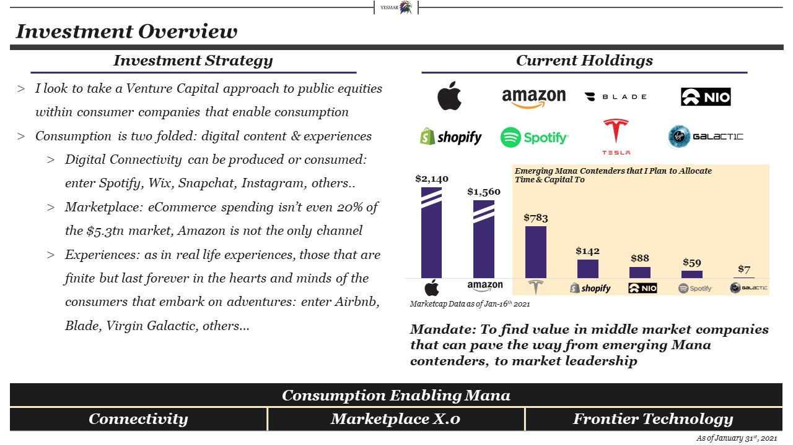

Mandate: Provide exceptional returns through investing in publicly traded growth technology stocks for long-term capital appreciation and short-term gains when appropriate through event-driven strategies.
Updated: April-18-2020


Mandate: Provide exceptional returns through investing in publicly traded growth technology stocks for long-term capital appreciation and short-term gains when appropriate through event-driven strategies.

Consider Google's R&D Spend in 2013 which was $7bn, come 2019 it's increased 270%+ fueled by M&A, in house moonshot projects and internet in Africa. Tesla
Boeing, the staple of America: *The* Aerospace & Defense Leader, employs 153,000 people as of 2019, whereas Amazon blows that out of the water with nearly 8x more, sitting at 840,000 employees. The new world rewards challengers who confront the status quo and more often than that, they're companies who truly leverage technology witin their respective industries.
So is there infinite demand for technology services? Well if you're Google and you own search, ads, google drive, Nest... I could go on forever - yes it seems like there is no end in sigh for Mega Cap tech services given thei diversification, unless they're probed from Congress as we're seeing this week - but that hasn't even had a material affect on investors perception of the companies.


A further in-depth analysis on buying puts on the SPY is to come next, focusing on the drivers of what a Trump-Reelection would look like, the state of COVID-19 in 2021, The American Consumer, The Federal Reserve and an Entry / Exit Model.

The idea of an index is to track a slew of securities that fit a certain criteria. In this case, I'm tracking the current portfolio holdings, but in the future I would like to track the values of the emerging & incumbent mana contenders.
The question for me is: Price Weighted (Dow Jones) or Market Cap Weighted (SP500). Both have drawbacks when including mega cap FAANG names as with the market cap weighted index, Apple would dominate the movement, while with the price weighted index, we see that Amazon is dominating the price movements.
An ETF that holds portfolio weights is probably the best medium for an index tracker since the aggregate price movement of the index is primarily driven by the % of asset allocation rather than price or market cap.
My next project is to create a price weighted index pulling companies from the Mana landscape in real time via Yahoo Finance APIs to show on the header in real time.
Despite my start within TMT and Industrials Technology Investment Banking, this took me a while to understand. Technology is a tool, not a business model.
There is no such thing as a "technology business" - only companies that leverage technology, such as in the case of Tesla, improved battery metrics, autonomous hardware and software as well as advanced manufacturing processes.
This thought process can be applied to any industry, which is what results in the emergence of 'FAANG' = Facebook (an internet business that leverages big data and machine learning to improve friend networks, and newsfeed - supported by an ad-based model), Apple (a computer and phone designer that leverages design technology, cloud computing and other software-based developer tools) - pinned up by an app store ecosystem, hardware sales and a growing subscription revenue platform, Amazon (a logistics / e-Commerce company that levereages machine learning to give you the best product reccomendations, enable 2-day shipping and optimize warehouses through robotics) - supported by e-Commerce sales and Prime Subscriptions, Netflix (originally a content aggregator and DVD subscription service, leveraged machine learning technology to give users content reccomendations) underpinned by subscriptions and is now investing in Netflix original content and finally, Google (a true internet company that build the foundation of search, but is leveraging AI, Machine Learning and nearly every other kind of technology to add to their many business lines, Waymo, Stadia, Search, Fiber and Nest) - underpinned by an ad word and search business.
Now let's get into some 'tech businesses' - the most recent example of this is the explosion of autonomous vehicle startups such as Peloton Trucking, Drive.ai, UberATG, Baidu, Aurora, ZOOX, Nuro, Cruise by GM, DeepMap, Starsky Robotics, Argo AI, Tesla AVs, Waymo - I could go on forever...
A slew of the names I mentioned before started by raising inordinate sums of Venture Capital, in order to fund what were essentially expensive research projects (go scientists) - because they had no underlying business model in conjunction with the technology development.
It seems like the ones who are winning the AV race are the well capitalized companies that have underlying businessmodels with healthy balance sheets, cash flow conversion and access to capital markets ex: Waymo, Tesla, Aptiv etc.
I belive there needs to be an underlying business model before the introduction of buzzword technology that will help support the beforementioned business.
Mana can be found within all consumer apps, which I still need to build a complete landscape for. However, there is immense value to Enterprise SaaS companies that fix major pain points for enterpise users with long contract values that promote sticky products, which result in high cashflow conversion and even higher Revenue and EBITDA multiples.


February 21st, the SP500 was at $3,337, upon the Coronavirus sell off, we hit a low of $2,237 on March 23rd (ironically) – shaving off 32% in under a month.
Come May 16th and the SP 500 closes at $2,863, a 15% drawdown – yet we’ve seen record unemployment numbers over the last eight weeks with about 36.5 million people filing for unemployment insurance, pushing the rate to an unprecedented 17% - levels we haven’t seen since pre-WWII and the 1929 Great Depression..
...Yet stocks are rebounding as indices are broadly up since their March 23rd lows...
It seems paradoxical to say that a lot of the opportunities I’m eyeing are ‘overbought’ as we see that Peloton has swept tailwinds from the exercise from home trends, regardless of sales have increased to the point where it justifies an 88% share price gain on the year. As a matter of fact, all companies that I’m eying are up 20%+ unless they have a retail footprint such as Revolve and The Real Real (down -60% & -56% respectively).
But this isn’t an essay about the macro economy as a whole, or the misnomers of the market, its an analysis on some future opportunities that: at a high level 1) fit the Mana mandate, 2) are good businesses to invest in once valuations are more attractive, and 3) will require more diligence (specifically the ones with targeted in red) on an investment opportunity.
A note on portfolio management: I don’t need to invest in these new companies either, there will be a limit for my independent research capabilities, however being able to silo my investments in a theme help consolidate the general research I’d need to do for companies like Shopify, Chewy, Revolve etc.. But again, I don’t need to invest in these companies – it just adds more work on my end eventually.
I had the fortune to not look at my portfolio during the depths of the pandemic (mainly because I had no cash to invest) but now that things are looking better, I might look to add more to my positions – or double down on my frontier investments that have been hit the hardest.
Part 2 will come with an indepth reveiew of the selected opportunities.

With interest rates at record low levels, the question for managers arise: Buy, Build or Partner? This then raises another question: How will we fund the choice we make? Through Debt or Equity? If you ask a Boutique Bank, a majority of their answers will point towards equity as they don't have a debt desk and look towards the advisory fee. So then for managers, they must decide: hire a boutique bank with sector expertise and thought leadership? Or hire a full-service bulge bracket bank that can provide staple financing - if needed. Of course this is simplifying the process, but the point still stands.
Do we chalk up Investment Banking success to rainmakers at the firm? Incentive packages through stock and options? Higher deal fee splits? Or Merging let's say a Jeffereis Group with a Stephens Inc. to create a JeffereisStephens Group - which will equate to a firm that has enhanced Capital Markets capabilities, a stronger balance sheet and a larger deal making team to spearhead a larger fee pool. Arguably enabling two Middle Market firms to compete within the larget Bugle Bracket category.
What goes to say for independent M&A Advisors such as Centerview, Moelis, LionTree, FT Partners and PWP? All of the likes started with similar rainmakers defuncting from their bulge bracket homes to create a more nimble, independent advisory firm. When these founders leave the babies they created - what will become of their brands and the franchises they sought to build? For one thing, having a name that is founder agnostic might help. But without pursuing diversifed revenue streams, these businesses might falter in the future.
Or they could become the likes of a Lazard, legacy advisory shop, founded in 1848 and commits to pure advisory services..
Investment Banking is no different than any other industry. Scale, Revenue Growth and Margins are essentials to business and when one goes public, pressure is put on to maximize those metrics above. The most recent wave of consolidation has come from the merger of Piper Jaffray and Sandler O'Neill as Piper Sandler Companies. The resulting company represents one of the broadest full-service investment banking platforms on Wall Street complemented by one of the largest securities distribution and trading franchises with leading market research aligned to serve the middle-market.
So maybe we will see an eventual JeffereisStephens Groups, or a RaymondJefferies Group...
Policy makers struggle to balance opening the economy, flattening the curve and the mounting death toll in the U.S.A.

Virgin Galactic is an interesting play because they fit right into this lens I'm trying to analyze industrial companies in: High Margin, Technologically Advanced, American Manufacturing with prominent leadership – Virgin has all of this. This business is reminiscent of Tesla in the early days. We entered this investment around February and have been taking hits from their speculation as well as the damper from the CoronaVirus.
With respect to their TAM and opening this up to the masses, I feel there is a fundamental business of selling the space experience here. $250k is not that much to spend on a one in a lifetime event like this. Imagine a Kardashian live streaming from space, or someone live streaming the first trade from space, the first MMA fight from space etc..
At the core, Virgin is an entertainment company and Branson is using Space as a platform so sell experiences.

Facebook, the largest social media platform has acquired, or outright copied competing platforms, as you can see below:
However, It seems like FinTech startups have rose up in the face of incumbents (Cash App’s rise because they serve the underserved areas/segments?! – a snippet from Jack Dorsey on the Joe Rogan Podcast) – all this success in relation to Venmo, ebay, Paypal, VISA, etc… Fintech might be a new vertical to analyze...

Feburary 29th, 2020: Markets Enter Correction Territory, as Supply Chains are Shocked from Corona Virus Outbreaks, however over the long term, The Status Quo of 'Designed in California, Made In China' will remain. This presents a very unique buying opportunity for name brands.